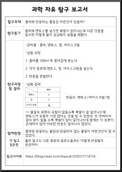
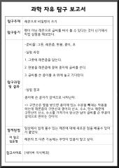
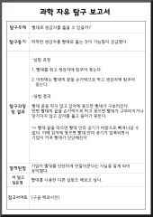
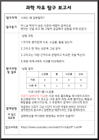

탐구 보고서


밑에 이미지를 클릭하면 저장할 수 있어요!

-탐구동기
콜라와 반응하는 물질은 어떤것이 있을까?
-탐구동기
콜라에 멘토스를 넣으면 폭발이 일어나는데 다른 것들을 넣으면
어떻게 될지 궁금해서 실험을 해봤다.
탐구 과정 및 결과
-준비물:콜라,멘토스,껌,아이스크림
-실험과정:
1. 콜라를 100ml씩 종이컵에 붓는다
2. 각각 음료에 멘토스,껌,아이스크림을 넣는다......

-탐구동기
레몬으로 비밀편지 쓰기
-탐구동기
펜이 아닌 레몬으로 글씨를 써서 볼 수 있다는 것이 신기해서
직접 실험을 해보았다.
탐구 과정 및 결과
-준비물:그릇, 레몬즙, 면봉, 종이, 초
-실험과정:
1.그릇에 레몬즙을 담는다.
2.면봉을 레몬즙에 묻혀 종이에 글씨를 쓴다.......

-탐구동기
빨대로 생감자를 뚫을 수 있을까?
-탐구동기
딱딱한 생감자를 빨대로 뚫는 것이 가능할지 궁금했다.
탐구 과정 및 결과
-실험과정:
1. 빨대를 쥐고 생감자에 힘주어 꽂는다.
2.이번에는 빨대의 끝을 손가락으로 막고 생감자에 힘주어
꽂는다.
......

-탐구동기
사과는 왜 갈변할까?
-탐구동기
어느날 먹다가 남은 사과의 색깔이 갈색으로
변하는 것을 보고 왜 그럴까 궁금해서 실험을 하게 되었다.
탐구 과정 및 결과
-준비물:종이컵, 식초, 물, 소금물
-실험과정:
1.각각의 종이컵에 식초, 소금물, 물을 넣는다.
2.그리고 한 개는 상온에 그냥 둔다.......